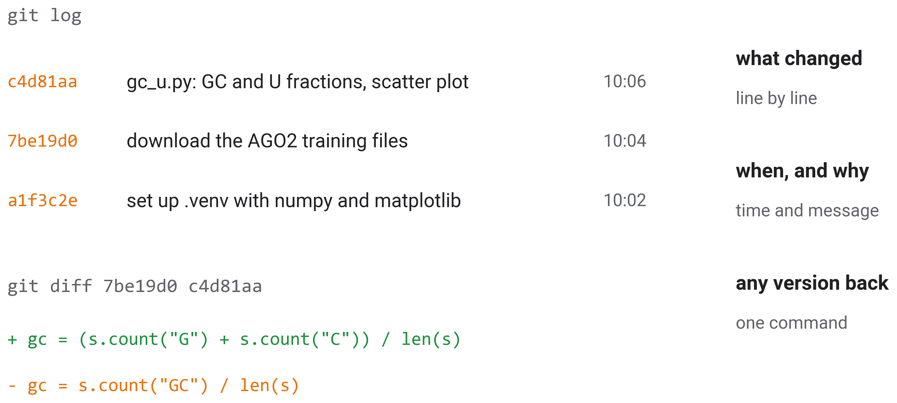

Agentic Accelerated Discovery
Using Coding Agents in the Lab
Roee Amit Lab
Faculty of Biotechnology and Food Engineering
Technion Israel Institute of Technology
Mattan Hoory
1.2 A chatbot answers, an agent acts


1.3 Set up

- Data: huggingface.co/datasets/yup8/ai-days-2026-ago2, AGO2 binding sites and unbound RNA
1.5 Git: the project’s history
git/ɡɪt/noun (computing) A program that records every version of a project’s files, with what changed, when and why.


2.1 Model and harness
harness/ˈhɑːr.nɪs/noun (computing) The program around a language model that runs its tools and asks your permission. It also manages the context and loads skills.

2.2 The agent loop

2.4 Anatomy of a prompt
prompt/prɒmpt/noun (computing) The instruction you give the agent: what to do, with what, how, and when it is done.

2.6 Compare yours

3.1 Anatomy of a skill
skill/skɪl/noun (agents) A folder of instructions, and the files they need, that the agent loads when a task matches it: a reusable prompt.

3.2 Not in the prompt, the agent decides

4.1 The context window
context windownoun (language models) Everything the model reads before each reply: instructions, the conversation, files opened, command output. It has a fixed size.
token/ˈtəʊ.kən/noun (language models) The unit a model reads and writes, a word or a piece of a word, about three quarters of an English word on average.


- New task, new session
4.2 Subagents and new sessions
subagent/ˈsʌbˌeɪ.dʒənt/noun (agents) A helper the agent starts for one part of a task, with its own empty context, that returns only a short result.


4.3 Reasoning effort
effort/ˈef.ət/noun (agents) How much the model thinks before each step. It is set from low to max.

- Medium most of the time
- Higher is not better
5.1 Work in phases

5.2 The same plot, with the skill
Without the skill

With the academic figure skill
5.4 Your results


- Every number with its command
6.1 Two setups


6.2 Nightly runs

6.3 Our lab’s skills

6.4 Tracking experiments: ClearML

6.5 Example: a literature review

- Open every cited paper
6.6 A shared wiki
wiki/ˈwɪk.i/noun (projects) A set of linked pages that everyone on a project reads and edits; here, plain files in the repository.

6.7 The models